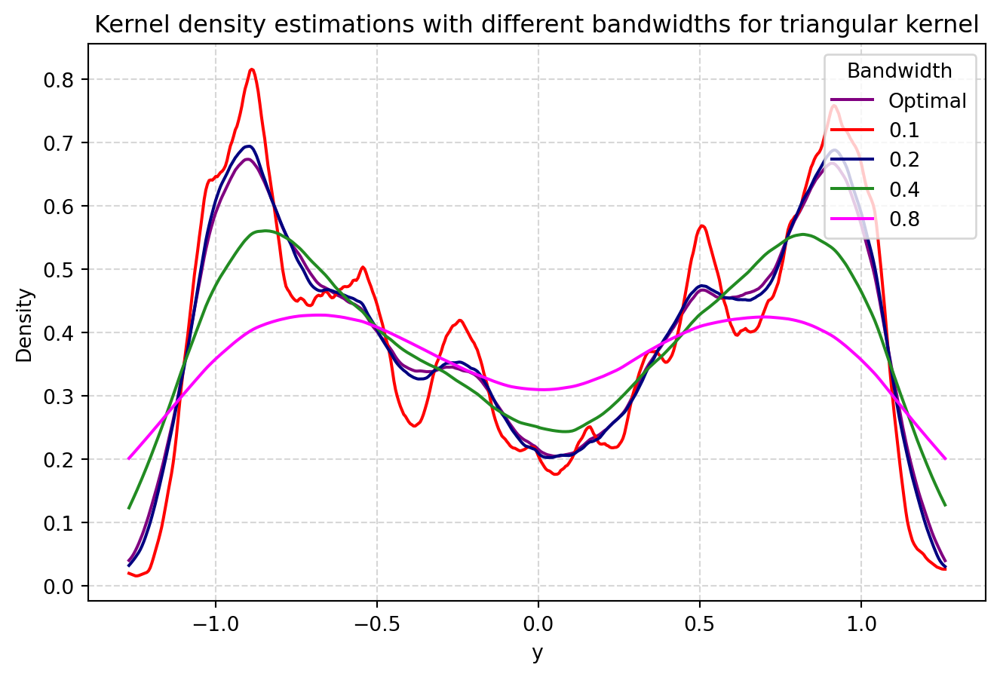
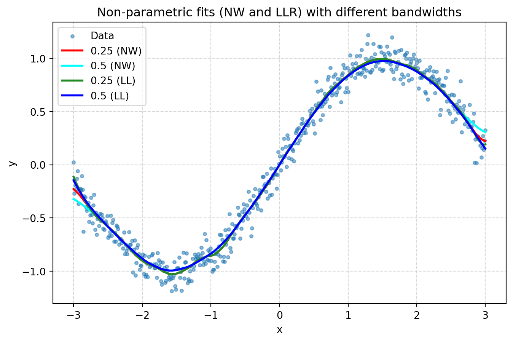
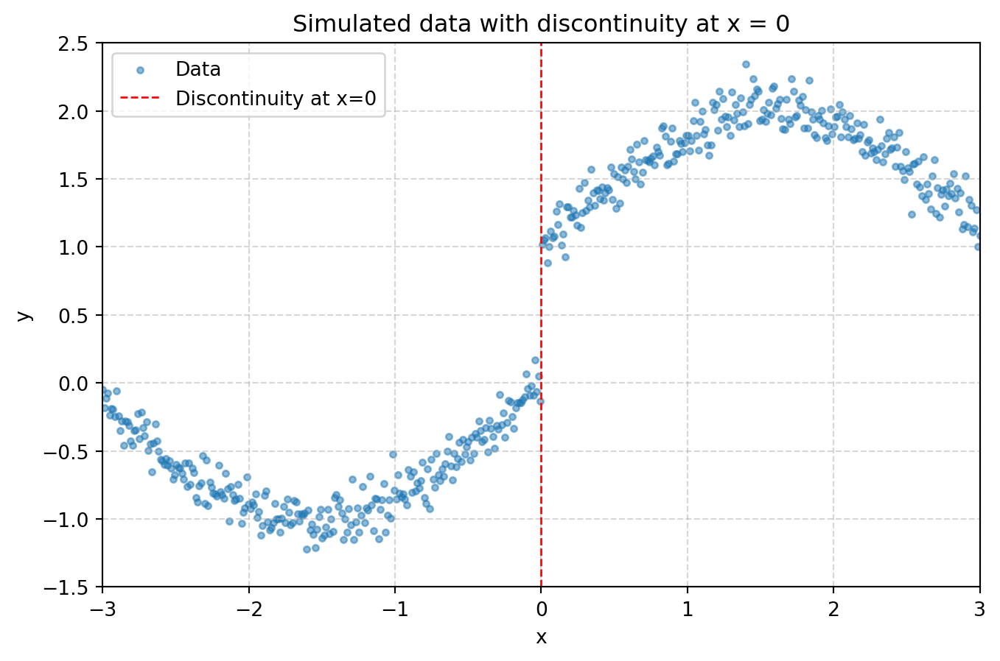
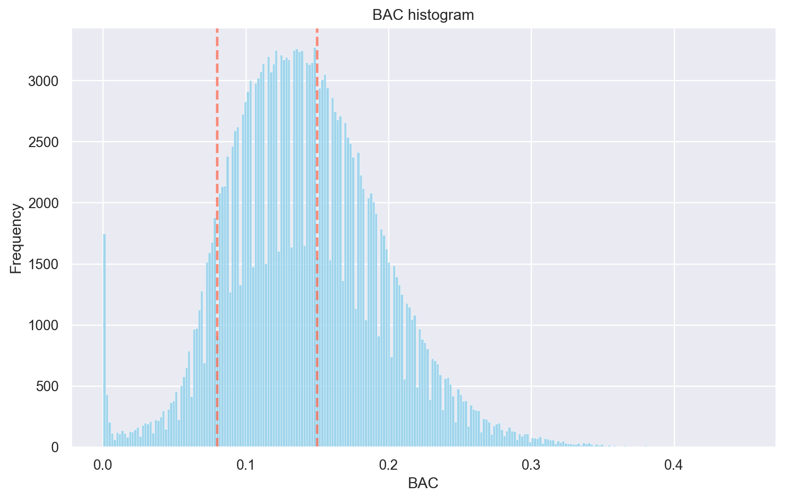
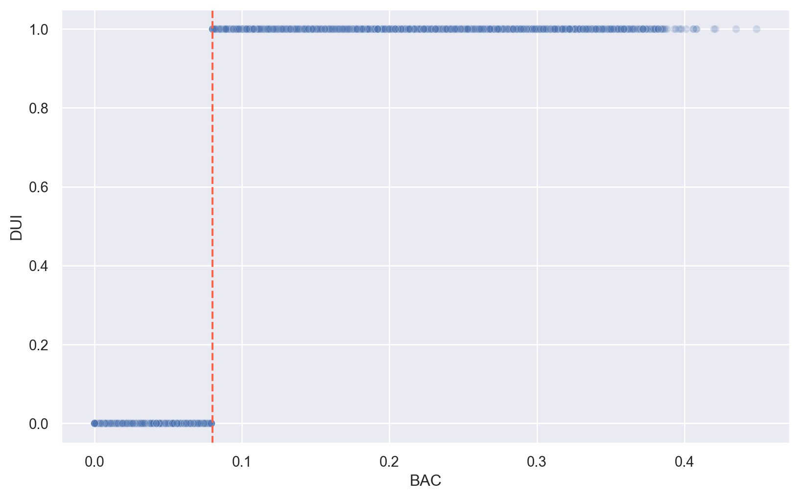
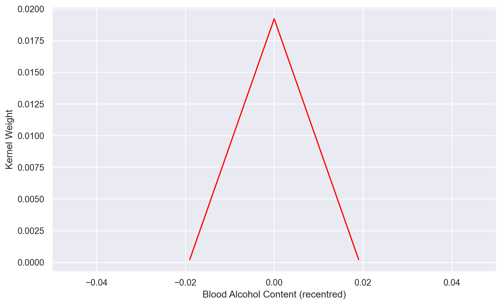
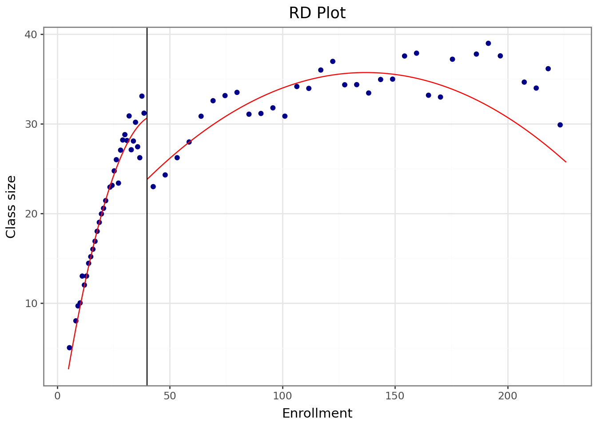
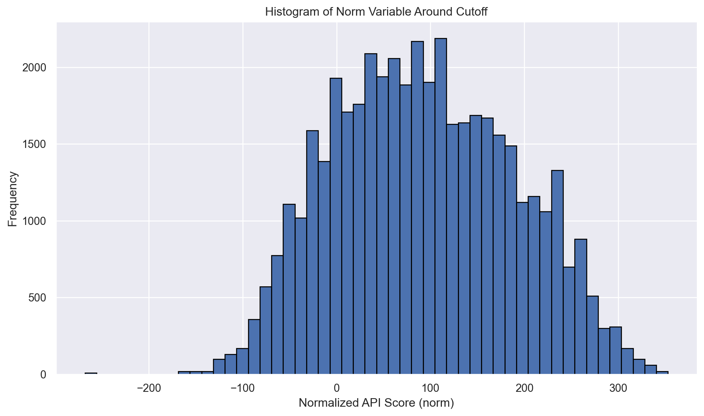
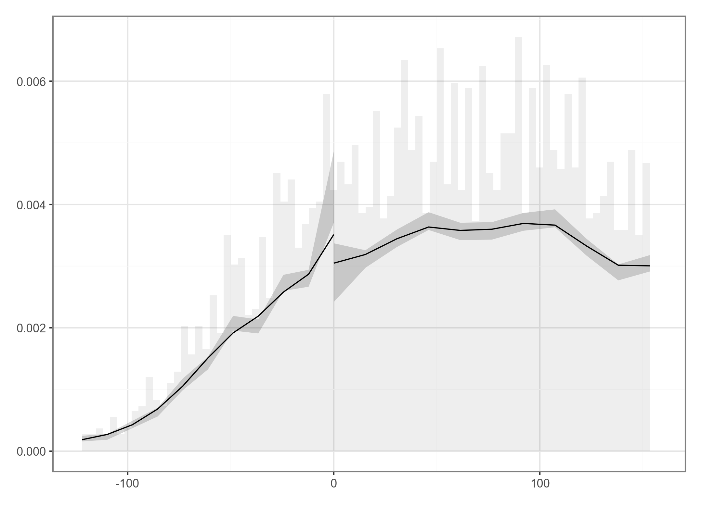
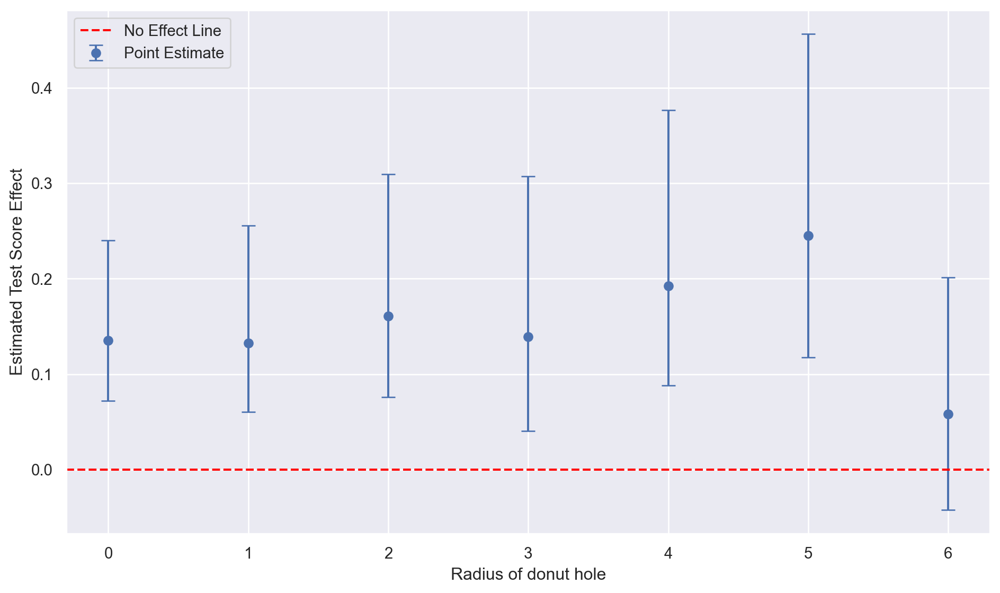

In this code call-out we will examine two common non-parametric estimation methods, and see why local linear regression, rather than the Nadaraya-Watson estimator, is preferred for regression discontinuity designs. We will consider a quite simple case, and examine how each of these techniques, along with a number of auxiliary modelling choices, manage to recover an underlying data generating process (DGP). To do this, we will work with the following simulated data: \[y_i = \sin{(x_i)} + \varepsilon_i \quad , \quad -3 \leq x \leq 3 \ , \ \varepsilon_i \sim \mathcal{N}(0,0.01)\] which will simply provide a sine function along with random noise. Below we will simulate 500 realisations of this, plotting the resulting data:
Generally, our goal in non-parametric estimation procedures will be to flexibly describe some data, or the relationship between two (or more) variables, and will do so by modelling variation local to some point of interest. These processes require at least two choices: a decision of which obesrvations we consider “local” to each point, as well as a decision about how to weight variables around these points. The first of these choices is referred to as the bandwidth, whereas the second of these points is controlled by a kernel function, which can place more or less weight on variables at differing distances from the point of interest. For further information on these elements, refer to Section 6.3.2.3 of the book.
Bandwidth and Kernel Choices
Before we consider non-parametric models which seek to describe relationships between two variables (\(x_i\) and \(y_i\) above), we will explore the impact of choices of bandwidths and kernels when simply estimating the density of a single variable (\(y_i\)) itself. Prior to doing this, you may wish to note that above, even though we have simulated an evenly spaced grid for \(x_i\), there will be more observations of \(y_i\) at certain points given the nature of the sine function (and you can confirm this by generating a histogram of the \(y_i\) data simulated here, or by simply exploring how \(\sin{x_i}\) maps into \(y_i\) at various different points of \(x_i\).)
Below, we will estimate the density of our \(y_i\) variable using a kernel density plot with the 4 different kernel functions plotted in Figure 6.6 of the book:
In general, we can see that while these kernel choices lead to reasonably similar descriptions of the data, the uniform kernel is the most noisy, which makes sense given that it places equal weight to observations which are close, and those which are further from each point of interest \(y\).
For these kernel density estimates presented above, the optimal bandwidth is from what was calculated automatically by R. This is Silverman’s rule of thumb bandwidth (Silverman (1986), p. 48) which is calculated as: \[h=0.9\times\min\bigg(\sigma,\frac{IQR}{1.34}\bigg)\times N^{-1/5}\] where \(\sigma\) refers to the standard deviation, and \(IQR\) the interquartile range of the data. Varying these bandwidth values below (with a triangular kernel by default) we can see how densities are (over)-smooth with large bandwidths, while quite jumpy with small bandwidths:
bandwidths = [None, 0.1, 0.2, 0.4, 0.8] # None representa el bandwidth óptimocolors = ['purple', 'red', 'navy', 'forestgreen', 'magenta']labels = ['Optimal', '0.1', '0.2', '0.4', '0.8']x_vals = np.linspace(df['y'].min(), df['y'].max(), 500).reshape(-1, 1)plt.figure(figsize=(8, 5))for bw, color, label inzip(bandwidths, colors, labels):if bw isNone: bw =1.06* df['y'].std() * (len(df['y']) **-0.2) # Regla de Silverman kde = KernelDensity(kernel='linear', bandwidth=bw).fit(df['y'].values.reshape(-1, 1)) log_dens = kde.score_samples(x_vals) plt.plot(x_vals, np.exp(log_dens), color=color, linewidth=1.5, label=label)plt.title("Kernel density estimations with different bandwidths for triangular kernel")plt.xlabel("y")plt.ylabel("Density")plt.legend(title="Bandwidth", loc='upper right')plt.grid(True, linestyle='--', alpha=0.5)plt.show()

Local Linear and Nadaraya-Watson Estimation
Having briefly explored these auxiliary choices, let’s examine non-parametric estimation methods to describe relationships between two variables (in this case \(y\) and \(x\)). Here, we will examine the Nadaraya-Watson estimator (with a number of distinct kernels), and compare this to local linear regression.
We begin below by estimating a Nadaraya-Watson with a triangular and an Epanechnikov kernel, saving the output of these two estimation procedures. We will not inspect output yet (we will do so below), but you may wish to print the output of either of these to see that we are returned a regression fit, as well as a number of pieces of information such as the bandwidth used by default.
A key thing to note in the above is that while the Nadaraya-Watson and local linear regression provide quite similar fits away from the end points of the data, at the end points (ie where \(x\) is close to -3 and 3), they diverge substantially, with local linear regression appearing to do a much better job of approximating the true data.
While this pattern lines up with the discussion of local linear regression as providing a better fit at the end point of data, we have simply accepted default arguments from each of the above libraries. Below we consider cases where we can compare with a range of (similar) bandwidths, always using an identical triangular kernel:
import numpy as npimport pandas as pdimport matplotlib.pyplot as pltdf = pd.DataFrame({'x': np.linspace(-3, 3, 500)})df['y'] = np.sin(df['x']) + np.random.normal(0, 0.1, 500)def triangular_kernel(u):return (1- np.abs(u)) * (np.abs(u) <=1)def local_linear_regression(x_train, y_train, x_eval, bandwidth, kernel): y_pred = np.zeros_like(x_eval)for i, x0 inenumerate(x_eval): weights = kernel((x_train - x0) / bandwidth) X = np.vstack([np.ones_like(x_train), x_train - x0]).T W = np.diag(weights)if np.linalg.det(X.T @ W @ X) >1e-10: # Evitar matrices singulares beta = np.linalg.inv(X.T @ W @ X) @ (X.T @ W @ y_train) y_pred[i] = beta[0] # Intercepto como predicciónelse: y_pred[i] = np.mean(y_train) # Valor medio si no hay pesos significativosreturn y_predx_eval = np.linspace(-3, 3, 500)bandwidths = [0.25, 0.5]nw_preds = {bw: nadaraya_watson(df['x'].values, df['y'].values, x_eval, bw, triangular_kernel) for bw in bandwidths}llr_preds = {bw: local_linear_regression(df['x'].values, df['y'].values, x_eval, bw, triangular_kernel) for bw in bandwidths}plt.figure(figsize=(8, 5))plt.scatter(df['x'], df['y'], s=10, alpha=0.5, label='Data')plt.plot(x_eval, nw_preds[0.25], color='red', linewidth=2, label='0.25 (NW)')plt.plot(x_eval, nw_preds[0.5], color='cyan', linewidth=2, label='0.5 (NW)')plt.plot(x_eval, llr_preds[0.25], color='forestgreen', linewidth=2, label='0.25 (LL)')plt.plot(x_eval, llr_preds[0.5], color='blue', linewidth=2, label='0.5 (LL)')plt.xlabel("x")plt.ylabel("y")plt.title("Non-parametric fits (NW and LLR) with different bandwidths")plt.legend()plt.grid(True, linestyle='--', alpha=0.5)plt.show()

In this case we see that with identical (arbitrary) bandwidths, the performance of Nadaraya-Watson and Local Linear regression is virtually identical away from the end points, degrading for Nadaraya-Watson at the end points of data.
Examining the implications for regression-discontinuity estimation
To see what this may imply for RD estimation, we will consider estimates of end points on either side of a discontinuity. We will do this by generating a jump in the previous function at the point where \(x = 0\), and then modelling regression fits on either side of this cut-off. Below we generate this jump in our data, and plot the result:
import numpy as npimport pandas as pdimport matplotlib.pyplot as pltdf = pd.DataFrame({'x': np.linspace(-3, 3, 500)})df['y'] = np.sin(df['x']) + np.random.normal(0, 0.1, 500)df['y'] += (df['x'] >0)plt.figure(figsize=(8, 5))plt.scatter(df['x'], df['y'], s=10, alpha=0.5, label='Data')plt.axvline(x=0, color='red', linestyle='dashed', linewidth=1, label='Discontinuity at x=0')plt.xlim(-3, 3)plt.ylim(-1.5, 2.5)plt.xticks(np.arange(-3, 4, 1))plt.yticks(np.arange(-1.5, 3, 0.5))plt.xlabel("x")plt.ylabel("y")plt.title("Simulated data with discontinuity at x = 0")plt.legend()plt.grid(True, linestyle='--', alpha=0.5)plt.show()

Let’s now examine what our regression fits look like if we separately model on either side of the cut-off with Nadaraya-Watson and Local Linear regressions. Below we do this, using default bandwidths from each routine:
as expected (and as we saw previously when examining end points of data), at points close to cutoff we observe that Local Linear regression seems to substantially outperform Nadaraya-Watson regression.
To examine this more formally, we will conduct a Monte Carlo experiment in which we repeat the above exercise 1000 times (using a similar bandwidth for each procedure), and examine the 95% confidence intervals from our regression estimates. We will begin by simply setting up some empty matrices to populate with resulting regression fits from each of 1000 simulations:
Now, let’s conduct our 1000 simulations. The key thing to note in the below “experiment” is that in each iteration we are re-simulating data \(y\) and then storing the resulting regression fit (for both Nadaraya-Watson and Local linear regession) in the pre-generated matrices:
Now, with this in hand we wish to observe the regression fits at percentile 2.5 and 97.5, allowing us to form an empirical 95% confidence interval for our simulated data.
Now finally, let’s have a look at each of the resulting end points, and compare it with the true underlying data generating process. We will do so by plotting the confidence intervals we generated above for both local linear and Nadaraya-Watson estimates.
While it appears that once again we can see the degradation of the behaviour of the fit with Nadaraya-Watson estimator at the end points of data, the confidence intervals here are quite narrow, and it is difficult to appreciate the divergence between these intervals and the underlying DGP plotted in grey. This is much clearer if we zoom in on the zone \(-0.5 \leq x \leq 0.5\), as below:
In this case we clearly see that while the local linear regression estimator contains the true DGP at all points, the Nadaraya-Watson estimator diverges close to the end points on each side, which is precisely the area we will be interested in when conducting regression discontinuity analyses. What’s more, if we use a larger bandwidth, we will see that this behaviour only becomes more problematic.
Hansen (2015) is interested in determining whether the sanctions on a driving under the influence of alcohol (DUI) affect recidivism. The DUI is determined by the blood alcohol content (BAC). This paper uses administrative records on a 512,964 DUI stops in Washington state (WA). A BAC above 0.08 denotes a DUI and forms a sharp threshold. Hansen exploits this threshold in a sharp regression discontinuity design. This paper finds evidence that having a blood alcohol content about the DUI threshold reduces rates of recidivism over the next four years.
# Import librariesimport pandas as pdimport numpy as npimport matplotlib.pyplot as pltimport seaborn as snssns.set_theme()from statsmodels.formula.api import olsimport statsmodels.api as smfrom rdrobust import rdrobust# Load datadwi = pd.read_stata("data/Hansen_2015.dta")# Create a binary variable for DUI cutoffdwi['dui'] = (dwi['bac1'] >=0.08).astype(int)
We can visualise the design below. First, if we inspec the running variable, we can see that individuals are observed to have measured BACs over a wide range of values, with, as expected, no noteworthy bunching at the threshold arrest value of 0.08:
# Visualize the distribution of BACplt.figure(figsize=(10, 6))sns.histplot(dwi['bac1'], bins=250, color='skyblue', kde=False)plt.axvline(x=0.08, color='tomato', linestyle='--', linewidth=2, alpha=0.7)plt.axvline(x=0.15, color='tomato', linestyle='--', linewidth=2, alpha=0.7)plt.xlabel("BAC")plt.ylabel("Frequency")plt.title("BAC histogram")plt.show()

Second, we can see that the regression discontinuity is indeed sharp, with a jump in arrests for DUI from 0 at values of BAC at less then 0.08, to 1 for individuals with a BAC of 0.08 or higher.
# Scatter plot of DUI status by BACplt.figure(figsize=(10, 6))sns.scatterplot(x='bac1', y='dui', data=dwi, alpha=0.2)plt.axvline(x=0.08, color='tomato', linestyle='--')plt.xlabel("BAC")plt.ylabel("DUI")plt.show()

In this code call-out, we will explore the implementation of a Regression Discontinuity Design (RDD) which seeks to estimate the effect of these DUI arrests on recidivism, using BAC levels as the running variable. We will see how to implement the optimal procedure of Calonico, Cattaneo, and Titiunik (2014), and also that we can perfectly replicate the point estimates returned by these procedures by estimating simple regression models in the optimal bandwidth indicate.
We start below by loading our data once again, and re-standardising the running variable such that the cut-point is centreed precisely at 0. We could proceed without doing this, however this simplifies our models as well as the syntax of a number of commands. Then, provided that rdrobust is installed, we can estimate the optimal RDD estimate with a linear specification for the running variable and using a uniform kernel as below.
# Center the bac1 variable around the DUI threshold by subtracting 0.08dwi['bac1'] = dwi['bac1'] -0.08# Run rdrobust with uniform kernelrdd_result = rdrobust(y=dwi['recidivism'], x=dwi['bac1'], kernel='uniform')print(rdd_result)# Save the RD estimate coefficient for referencecoef_rdrobust_value = rdd_result.coef.iloc[0,0]print("Coefficient from rdrobust:", coef_rdrobust_value)
Mass points detected in the running variable.
Call: rdrobust
Sharp RD estimates using local polynomial regression.
Number of Observations: 214558
Polynomial Order Est. (p): 1
Polynomial Order Bias (q): 2
Kernel: Uniform
Bandwidth Selection: mserd
Var-Cov Estimator: NN
Left Right
------------------------------------------------
Number of Observations 22101 192457
Number of Unique Obs. 80 319
Number of Effective Obs. 12499 24076
Bandwidth Estimation 0.019 0.019
Bandwidth Bias 0.034 0.034
rho (h/b) 0.565 0.565
Method Coef. S.E. z-stat P>|z| 95% CI
-------------------------------------------------------------------------
Conventional -0.015 0.007 -2.203 2.762e-02 [-0.028, -0.002]
Robust - - -1.958 5.022e-02 [-0.032, 0.0]
Coefficient from rdrobust: -0.0148220436682696
In practice, the linear specification for the runnign variable simply implies the following model. Here, \(DUI_i\) takes values of 1 if an individual is arrested for a DUI (ie if \(BAC\geq 0.08\)), or 0 otherwise. We then allow for separate linear trends for the running variable on either side as \(\beta_1\) will capture the trend on the left-hand side, while \(\beta_1+\beta_2\) will capture the trend on the right-hand side. Thus, our model below allows for separate linear trends, while also allowing for a discontinuity at the cut-point, captured by the parameter on the binary variable \(DUI_i\). \[
recidivism_i = \beta_0 + \beta_1 BAC_i + \beta_2 BAC_i \times DUI_i + \tau^{RDD} DUI_i + \varepsilon_i
\]
Before estimating the regression discontinuity estimate itself, we can confirm to ourselves that this model does effectively allow for a separate linear trend on each side of the cut-off, and separate intercept terms on either side of the cut-off. Below, we will set-up the required variables, and then calculate the predicted trend for the below cut-off portion of our model (y_below), as well as the above cut-off portion of our model:
As we can see, we observe a quite clear jump at the cut-off when this specific functional form is imposed, and this jump appears to be in line with the quantity estimate above by the rdrobust command. But to see that this is indeed what rdrobust does, we can implement this model “by hand” with the exact same optimal bandwidth used in rdrobust. In this case, we will also estimate exactly the same regression discontinuity estimate as above (though not the same standard errors, given that rdrobust implements bias-correction methods discussed in Section 6.3.3 of the book).
# Calculate optimal bandwidths from rdrobustleft_bandwidth = rdd_result.bws.iloc[0,0]right_bandwidth = rdd_result.bws.iloc[0,1]# Filter observations within bandwidthfiltered_data = dwi[(dwi['bac1'] >-left_bandwidth) & (dwi['bac1'] < right_bandwidth)]# Manual OLS within bandwidthmanual_ols = ols("recidivism ~ dui + bac1 + bacXabove", data=filtered_data).fit()coef_manual = manual_ols.params['dui']print("Coefficient from rdrobust with controls:", coef_rdrobust_value)print("Manual coefficient with controls:", coef_manual)
Coefficient from rdrobust with controls: -0.0148220436682696
Manual coefficient with controls: -0.014822043668265889
It is illustrative to also see that we can replicate point estimates (though not confidence intervals) with other polynomial orderings, and with other kernel density estimates. Above we had used a uniform density, because this implied simply assigning the same weight to each observation. However, it is somewhat more standard (and indeed, rdrobusts default behaviour), to use a triangular kernel which gives the most weight to units closest to the cut-off, linearly declining to 0 at the end of the optimal bandwidth. To see that we can also replicate results manually in other settings, let’s start by consider the case where we wish to work with the default behaviour in rdrobust and use a triangular density. We will begin by simply estimating rdrobust and saving the coefficient of interest:
# Run rdrobust with the default triangular kernelrdd_result_triangle = rdrobust(y=dwi['recidivism'], x=dwi['bac1'])# Extract lower and upper bandwidthslower =-rdd_result.bws.iloc[0,0]upper = rdd_result.bws.iloc[0,1]coef_rdrobust_triangle = rdd_result_triangle.coef.iloc[0,0]print(f"Our estimation bandwidth is from {lower} to {upper}")print("Our RD Robust coefficient with triangular kernel:", coef_rdrobust_triangle)
Mass points detected in the running variable.
Our estimation bandwidth is from -0.019216799963704328 to 0.019216799963704328
Our RD Robust coefficient with triangular kernel: -0.01621604141495714
To generate a triangular kernel, we wish to generate a weight which is centred on the cut-point, and which declines linearly to the end points of this estimation bandwidth. Noting that our optimal bandwidth is the same on both sides, and that our running variable has been re-centred at zero, we can define our triangular kernel weights \(K\) as follows: \[
K(running\ variable) = (h_{opt}-|running\ variable|),
\] for all values between \(-h_{opt}\) and \(h_{opt}\). This ensures that our weights will reach their maximum point when centred on 0 (the cut-off), and decline to 0 at the end of the optimal bandwidth range. We do this below, checking to see what our weight variable looks like to ensure that we have set this up correctly.
# Generate triangular weightsdwi['K'] = left_bandwidth -abs(dwi['bac1'])dwi.loc[dwi['K'] <0, 'K'] = np.nan # Replace negative weights with NA# Sort the data frame by bac1 for plotdwi = dwi.sort_values(by=['bac1'])# Plot kernel weightsplt.figure(figsize=(10, 6))plt.plot(dwi['bac1'], dwi['K'], color='red')plt.xlim(-0.05, 0.05)plt.xlabel("Blood Alcohol Content (recentred)")plt.ylabel("Kernel Weight")plt.show()

With this triangular weight in hand, we can once again “manually” replicate the rdrobst point estimate (though not the standard errors). This is simply done using our linear fit for the running variable on each side of the cut-off, and weighting using the kernel:
/home/dcc213/venvs/microecon/lib/python3.10/site-packages/statsmodels/regression/linear_model.py:920: ValueWarning: Weights are not supported in OLS and will be ignoredAn exception will be raised in the next version.
/home/dcc213/venvs/microecon/lib/python3.10/site-packages/statsmodels/base/model.py:130: ValueWarning: unknown kwargs ['weights']
As we see above, our estimates are identical, up to a large number of decimal places. Finally, in the interests of completion, let’s just confirm to ourselves that we can also replicate what rdrobust does with a quadratic fit of the running variable. In this case, we need to simply augment the specification which we estimated previously which generated a separate linear fit on each side of the cut-off of interest with an additional quadratic term on each side. While there are various ways we can do this, one of these is documented below:
Now, with linear and quadratic forms of the running variable, as well as indicators allowing for separate trends on either side of the cut-off, we can confirm that rdrobust with a quadratic running variable is the same (in terms of point estimate) as a regression of the outcome on dui plus the separate quadratic fit on each side:
# Generate linear and quadratic interaction termsdwi['bac_sq'] = dwi['bac1'] **2dwi['bac_sqXabove'] = dwi['bac_sq'] * dwi['dui']# Run rdrobust with quadratic fitrdd_result_quad = rdrobust(y=dwi['recidivism'], x=dwi['bac1'], p=2, kernel="uniform")# Extract bandwidths and manually replicate the quadratic fit within the bandwidthleft_bandwidth = rdd_result_quad.bws.iloc[0,0]right_bandwidth = rdd_result_quad.bws.iloc[0,1]filtered_data_quad = dwi[(dwi['bac1'] >-left_bandwidth) & (dwi['bac1'] < right_bandwidth)]# Manual OLS with quadratic fitmanual_ols_quad = ols("recidivism ~ dui + bac1 + bacXabove + bac_sq + bac_sqXabove", data=filtered_data_quad).fit()# Display manual OLS summaryprint(manual_ols_quad.summary())
Mass points detected in the running variable.
OLS Regression Results
==============================================================================
Dep. Variable: recidivism R-squared: 0.001
Model: OLS Adj. R-squared: 0.001
Method: Least Squares F-statistic: 7.300
Date: Mon, 15 Jun 2026 Prob (F-statistic): 7.58e-07
Time: 08:31:03 Log-Likelihood: -12809.
No. Observations: 54134 AIC: 2.563e+04
Df Residuals: 54128 BIC: 2.568e+04
Df Model: 5
Covariance Type: nonrobust
================================================================================
coef std err t P>|t| [0.025 0.975]
--------------------------------------------------------------------------------
Intercept 0.1143 0.007 17.291 0.000 0.101 0.127
dui -0.0134 0.008 -1.640 0.101 -0.030 0.003
bac1 -0.4105 1.178 -0.348 0.728 -2.720 1.899
bacXabove -0.1312 1.387 -0.095 0.925 -2.850 2.588
bac_sq -8.7661 42.119 -0.208 0.835 -91.320 73.788
bac_sqXabove 33.7754 48.310 0.699 0.484 -60.914 128.464
==============================================================================
Omnibus: 26515.451 Durbin-Watson: 2.004
Prob(Omnibus): 0.000 Jarque-Bera (JB): 108014.309
Skew: 2.573 Prob(JB): 0.00
Kurtosis: 7.627 Cond. No. 5.94e+04
==============================================================================
Notes:
[1] Standard Errors assume that the covariance matrix of the errors is correctly specified.
[2] The condition number is large, 5.94e+04. This might indicate that there are
strong multicollinearity or other numerical problems.
We can see here that the coefficient on dui in the latter model is identical to the coefficient estimate in rdrobust with the quadratic polynomial (p(2)).
Code Call-out 6.3: Fuzzy RDD, First Stages, and Reduced Forms
In this code call-out we will explore a Fuzzy regression discontinuity design, documenting the first stage, reduced form estimate, and the resulting regression discontinuity estimate. We will work with data from Angrist and Lavy (1999) which examines class sizes and educational outcomes. To isolate the effect of class size, they take advantage of the fact that in the setting under study, class sizes are generally capped at 40 students. For this reason, classes in schools with 40 students enrolled would be expected to be set at 40 students, while schools with 41 students will split into two classes, with around 20-21 students on average. Given that this is not a sharp jump from 0 to 1 at the cut-off, this can be implemented as a Fuzzy RDD.
For this code call-out we will use two functions from the user-written rdrobust package, which can be installed with pip install rdrobust: rdrobust and rdplot. We will begin by loading data:
import pandas as pdimport matplotlib.pyplot as pltfrom rdrobust import rdrobust, rdplot# Load datadata = pd.read_stata("data/Angrist_Lavy_1999.dta")
If we inspect these data, we will see that there are a number of key variables which we will use here. These include avgverb (the average reading score of students in these data) which is our outcome variable. It also includes c_size, the cohort size from an individual’s school which is our running variable, and our treatment of interest classize, which is the size of an individual’s class.
Before formally getting into the details of this fuzzy RD, let’s have a look at key elements of the design. Below we will examine the average class size for each given cohort size. While we see that there is some noise, we clearly observe the sharp fall in class size occurring when cohorts reach 40 and 80 students.
Let’s begin by estimating the first stage of the discontinuity which quantifies the decline in class size in the area immediately surrounding the cut-off. We will do this with the default settings of rdrobust, where we consider the treatment variable (class size) as the outcome, with the running variable (cohort size), and a cut-off at 40 students. In practice in a setting like this we would likely wish to consider the multiple cut-offs available in our data (see Section 6.5.2 of the book), however for the interests of this code call-out, we will only consider the first cut-off.
# Implement rdrobust with default settings (cut-off = 40)first_stage_results = rdrobust(y=data["classize"], x=data["c_size"], c=40)print(first_stage_results)# Extract coefficient for the first stagecoef_first_stage = first_stage_results.coef.values[0][0]# Extract the optimal bandwidthbandwidth_fs = first_stage_results.bws.values[0, 1]print(f"Optimal bandwidth: {bandwidth_fs:.3f}")
Mass points detected in the running variable.
Call: rdrobust
Sharp RD estimates using local polynomial regression.
Number of Observations: 2029
Polynomial Order Est. (p): 1
Polynomial Order Bias (q): 2
Kernel: Triangular
Bandwidth Selection: mserd
Var-Cov Estimator: NN
Left Right
------------------------------------------------
Number of Observations 288 1741
Number of Unique Obs. 33 121
Number of Effective Obs. 96 236
Bandwidth Estimation 10.288 10.288
Bandwidth Bias 16.048 16.048
rho (h/b) 0.641 0.641
Method Coef. S.E. z-stat P>|z| 95% CI
-------------------------------------------------------------------------
Conventional -7.285 2.571 -2.834 4.603e-03 [-12.325, -2.246]
Robust - - -2.131 3.307e-02 [-13.115, -0.549]
Optimal bandwidth: 10.288
Here we can see that our estimated first stage effect is a decline of 7.3 students when crossing the threshold, and a bandwidth of around 10 is used. We save these quantities for later reference. If we wish to visualise this automatically, we can use rdplot, which we call below:
# Visualise the discontinuity in class size at 40 studentsout = rdplot(y=data["classize"], x=data["c_size"], c=40, x_label="Enrollment", y_label="Class size", p=2,kernel="Triangular")print(out)plt.tight_layout()plt.show()
Mass points detected in the running variable.

Call: rdplot
Number of Observations: 2029
Kernel: Uniform
Polynomial Order Est. (p): 2
Left Right
------------------------------------------------
Number of Observations 288 1741
Number of Effective Obs 287 1735
Bandwidth poly. fit (h) 35 186
Number of bins scale 1 1
Bins Selected 37 35
Average Bin Length 1.418 5.314
Median Bin Length 0.946 5.314
IMSE-optimal bins 10.0 19.0
Mimicking Variance bins 37.0 35.0
Relative to IMSE-optimal:
Implied scale 3.7 1.842
WIMSE variance weight 0.019 0.138
WIMSE bias weight 0.981 0.862
<Figure size 672x480 with 0 Axes>
Estimating the Reduced Form
Let’s now consider the reduced form effect of crossing the threshold on average reading test scores. Below we re-run rdrobust with this outcome, however this time we use the previously defined bandwidth to permit for the comparison with the automatic implementation of the fuzzy RD below. Once again we save the estimated coefficient for use below.
# Implement rdrobust with the first-stage bandwidth (cut-off = 40)reduced_form_results = rdrobust(y=data["avgverb"], x=data["c_size"], c=40, h=bandwidth_fs)print(reduced_form_results)# Extract coefficient from the reduced form modelcoef_reduced_form = reduced_form_results.coef.values[0][0]
Mass points detected in the running variable.
Call: rdrobust
Sharp RD estimates using local polynomial regression.
Number of Observations: 2024
Polynomial Order Est. (p): 1
Polynomial Order Bias (q): 2
Kernel: Triangular
Bandwidth Selection: Manual
Var-Cov Estimator: NN
Left Right
------------------------------------------------
Number of Observations 287 1737
Number of Unique Obs. 33 121
Number of Effective Obs. 96 236
Bandwidth Estimation 10.288 10.288
Bandwidth Bias 10.288 10.288
rho (h/b) 1.0 1.0
Method Coef. S.E. z-stat P>|z| 95% CI
-------------------------------------------------------------------------
Conventional 4.316 3.262 1.323 1.858e-01 [-2.077, 10.708]
Robust - - 0.285 7.754e-01 [-8.795, 11.791]
Here we see that test scores increase by around 4 points when crossing this threshold (or about 50% of a standard deviation). Similar to the first stage, if we wish to view a graphical output of this reduced form relationship we can easily do so using rdplot:
Call: rdplot
Number of Observations: 2024
Kernel: Uniform
Polynomial Order Est. (p): 2
Left Right
------------------------------------------------
Number of Observations 287 1737
Number of Effective Obs 286 1732
Bandwidth poly. fit (h) 35 186
Number of bins scale 1 1
Bins Selected 38 35
Average Bin Length 1.499 5.314
Median Bin Length 0.921 5.314
IMSE-optimal bins 6.0 29.0
Mimicking Variance bins 38.0 35.0
Relative to IMSE-optimal:
Implied scale 6.333 1.207
WIMSE variance weight 0.004 0.363
WIMSE bias weight 0.996 0.637
<Figure size 672x480 with 0 Axes>
Putting things together
Let’s now bring this together, and confirm that our Fuzzy RD estimate in this setting is equivalent to the ratio of the reduced form and the first stage (ie the IV estimate). We will do this below by first implementing rdrobust with the previously saved bandwidth. We will indicate that this is a Fuzzy design by using the fuzzy argument, along with the treatment variable of interest. Then we will manually calculate the ratio of previously generated estimates.
# Run Fuzzy RDfuzzy_rd_results = rdrobust(y=data["avgverb"], x=data["c_size"], c=40, fuzzy=data["classize"], h=bandwidth_fs)print(fuzzy_rd_results)# Now compare with ratio of previously generated point estimatesmanual_RDF = coef_reduced_form / coef_first_stageprint(f"Fuzzy RD (Manual) Estimate: {manual_RDF:9.3f}")
Mass points detected in the running variable.
Call: rdrobust
Fuzzy RD estimates using local polynomial regression.
Number of Observations: 2024
Polynomial Order Est. (p): 1
Polynomial Order Bias (q): 2
Kernel: Triangular
Bandwidth Selection: Manual
Var-Cov Estimator: NN
Left Right
------------------------------------------------
Number of Observations 287 1737
Number of Unique Obs. 33 121
Number of Effective Obs. 96 236
Bandwidth Estimation 10.288 10.288
Bandwidth Bias 10.288 10.288
rho (h/b) 1.0 1.0
Method Coef. S.E. z-stat P>|z| 95% CI
-------------------------------------------------------------------------
Conventional -0.592 0.572 -1.037 3.000e-01 [-1.713, 0.528]
Robust - - -0.194 8.459e-01 [-2.056, 1.685]
First-Stage Estimates.
Method Coef. S.E. z-stat P>|z| 95% CI
-------------------------------------------------------------------------
Conventional -7.285 2.571 -2.834 4.603e-03 [-12.325, -2.246]
Robust - - -1.698 8.947e-02 [-16.229, 1.161]
Fuzzy RD (Manual) Estimate: -0.592
We can see above that as discussed, these two methods are identical.
Working with the Optimal Bandwidth
Note that in practice, Fuzzy RDDs work with an optimal bandwidth calculated for this design, and so rather than working with the first-stage bandwidth as above, if we wish to replicate the default Fuzzy RDD point estimate from rdrobust we can simply use this bandwidth in our reduced form and first stage models. Below we illustrate this, observing that our point estimates are identical in both cases:
# Estimate Fuzzy RD for optimal bandwidthfuzzy_rd_results = rdrobust(y=data["avgverb"], x=data["c_size"], c=40, fuzzy=data["classize"])print(fuzzy_rd_results)fuzzy_bandwidth = fuzzy_rd_results.bws.values[0, 1]# Estimate reduced form with this bandwidthreduced_form_results = rdrobust(y=data["avgverb"], x=data["c_size"], c=40, h=fuzzy_bandwidth)RF = reduced_form_results.coef.values[0][0]# Estimate first stage with this bandwidthfirst_stage_results = rdrobust(y=data["classize"], x=data["c_size"], c=40, h=fuzzy_bandwidth)FS = first_stage_results.coef.values[0][0]# Compare with automatic implementationprint(f"Fuzzy RD (Manual) Estimate is: {RF / FS:9.3f}")
Mass points detected in the running variable.
Call: rdrobust
Fuzzy RD estimates using local polynomial regression.
Number of Observations: 2024
Polynomial Order Est. (p): 1
Polynomial Order Bias (q): 2
Kernel: Triangular
Bandwidth Selection: mserd
Var-Cov Estimator: NN
Left Right
------------------------------------------------
Number of Observations 287 1737
Number of Unique Obs. 33 121
Number of Effective Obs. 70 172
Bandwidth Estimation 7.22 7.22
Bandwidth Bias 12.814 12.814
rho (h/b) 0.563 0.563
Method Coef. S.E. z-stat P>|z| 95% CI
-------------------------------------------------------------------------
Conventional -0.38 0.641 -0.593 5.533e-01 [-1.637, 0.877]
Robust - - -0.43 6.672e-01 [-1.828, 1.17]
First-Stage Estimates.
Method Coef. S.E. z-stat P>|z| 95% CI
-------------------------------------------------------------------------
Conventional -7.304 3.242 -2.253 2.428e-02 [-13.659, -0.949]
Robust - - -1.892 5.850e-02 [-14.965, 0.264]
Mass points detected in the running variable.
Mass points detected in the running variable.
Fuzzy RD (Manual) Estimate is: -0.380
Code Call-out 6.4: Manipulation and balance tests in RDD
In this code call-out we will work with data from Holden (2016), who examines the impact of receipt of a school level grant for textbook purchases on student performance in these schools. This is estimated based on a discontinuity in the assignment of a one time payment for schools with scores falling below a specific point. Below, we will work with these data to explore a range of standard diagnostic tests including balance tests considering how a number of pre-determined variables move around the cut-off of interest, as well as McCrary (2008) tests examining the density of the running variable on either side of the cut-off.
Below we will load data provided by Holden (2016), and redefine the running variable to be centred on zero. In this call-out we will focus on schools at the primary level, for which the relevant cut-off is 643 points. In the paper, middle and high schools are also considered which have different cut-off points (600 and 584 points respectively), though for simplicity here we will focus on just primary schools, and so begin by simply sub-setting the data in this way, as well as generating an average score outcome we will consider below as a measure of performance based on the mean of normalised math and reading scores:
import pandas as pdimport numpy as npimport matplotlib.pyplot as pltfrom rdrobust import rdrobustfrom rddensity import rddensity, rdplotdensity# Load the datasetdf = pd.read_stata("data/Holden_2016.dta")# Keep only primary schools and generate normalised running variabledf = df[df['stype'] =='E'].copy()df['norm'] = df['api_rank'] -643# Generate normalised scores for reading and mathdf['z_mathscore'] = (df['mathscore'] - df['mathscore'].mean()) / df['mathscore'].std()df['z_readscore'] = (df['readingscore'] - df['readingscore'].mean()) / df['readingscore'].std()# Generate average scoredf['average_score'] = df[['z_mathscore', 'z_readscore']].mean(axis=1)
Tests of Balance of the Running Variable
We can examine what the distribution of the running variable looks like in this setting. Below we see that there is substantial mess on either side of the cut-off now re-defined at 0. While the histogram points to potential heaping in this variable at around 0, we can test this formally using a McCrary (2008) test.
plt.figure(figsize=(10, 6))plt.hist(df['norm'], bins=50, edgecolor='black')plt.xlabel("Normalized API Score (norm)")plt.ylabel("Frequency")plt.title("Histogram of Norm Variable Around Cutoff")plt.tight_layout()plt.show()

We do this below. In particular, while this is based on the idea of McCrary (2008), we implement the more modern version of this test, defined by Cattaneo, Jansson, and Ma (2020) based on local polynomial methods and optimal bandwidths. This can be implemented using the rddensity library which was written to implement these methods, and described at more length in Cattaneo, Jansson, and Ma (2018). We do this below, requesting a plot output, and using the bino_flag=False option to simply focus on the standard McCrary test which looks at continuity of the density of the running variable around the cut-off:
# Filter data after 2004df_filtered = df[df['year'] >2004].copy()# Run rddensity testresults = rddensity(df_filtered['norm'], c=0, bino_flag=False)results# Plot the densityrdplotdensity(results, df_filtered['norm'])
Manipulation testing using local polynomial density estimation
Number of obs: 31004
Model: unrestricted
Kernel: triangular
BW method: estimated
VCE: jackknife
c = 0 Left of c Right of c
Number of obs: 5873 25131
Eff. number of obs: 3362 5495
Order est. (p): 2 2
Order bias. (q): 3 3
BW est. 40.6949 51.1297
Method: T P > |T|
Robust -1.1817 0.2373

RD Density Testing
Here we see that based on the optimal bandwidth local polynomial test, we do not observe clear evidence of a statistically significant jump in the density of the running variable around the cut-off. We can see this graphically with the density estimate on each side of the cut-off contained within the confidence intervals of the density on the other side, however can also see it formally with the reported test statistic (\(t=-1.17\)).
Given the discrete nature of the running variable, it may also be of interest to consider the version of tests discussed at the end of Section 6.4.2 of the book. We do so below, focusing on quite small windows of 2 point bins on either side of the cutoff, growing to up to 20 point bins on either side of the cut-off.
# Run rddensity with binomial test, window of 2 pointsresults_bino = rddensity(df_filtered['norm'], c=0, binoW=2)results_bino
Manipulation testing using local polynomial density estimation
Number of obs: 31004
Model: unrestricted
Kernel: triangular
BW method: estimated
VCE: jackknife
c = 0 Left of c Right of c
Number of obs: 5873 25131
Eff. number of obs: 3362 5495
Order est. (p): 2 2
Order bias. (q): 3 3
BW est. 40.6949 51.1297
Method: T P > |T|
Robust -1.1817 0.2373
P-values of binomial tests (H0: p = [0.5] ).
Window Length/2 < c >= c P>|T|
2 231 315 0.0004
4 455 427 0.3633
6 658 679 0.5844
8 861 896 0.4173
10 1008 1064 0.2269
12 1161 1274 0.0232
14 1385 1456 0.1891
16 1510 1708 0.0005
18 1692 1869 0.0032
20 1853 2100 0.0001
It is clear from looking at the histogram of test scores around the cut-off that this is growing in frequency as moving away from the cut-off on the right, and falling in frequency as moving away from the cut-off on the left. For this reason, clearly we will eventually see that binary tests will reject equality of the number of observations on equal bins on either side, and we observe that this does occur once considering bins of 16 points on either side, where there are 1708 schools with a normalised score of 0-16, compared to only 1510 schools with a normalised score of -16 to -1. However, we observe that closer to the bandwidth the number of schools in contiguous bins is relatively similar, and does not lead to rejections of binomial tests, with the exception of scores very close to the cut-off, reflecting what we observed graphically in our original histogram.
Tests of Covariate Balance
Given that the reform studied in Holden (2016) was implemented after 2004, we have a range of measures which we know cannot depend on treatment assignment, and so have a logic test of covariate balance which we can consider. Here we will simply implement an identical regression discontinuity estimator, however focusing on baseline covariates, which helps to verify that any observed differences in the outcome can be attributed to the treatment effect, rather than pre-existing differences between the groups.
We may wish to begin by confirming that we can effectively replicate the main regression discontinuity result before replicating this strategy to test for covariate balance. Below we consider a principal outcome (mean test scores), and observe how it varies around the cut-off after the reform was put in place. We use the option scalepar=-1 to simply re-scale the estimate by -1, noting that schools below the cut-off receive the subsidy. We find that on average in the years following the reform, scores in treated schools are around 0.15-0.16 standard deviations higher than scores in untreated schools, in line with the results in Holden (2016) (eg Table 7 or Figure 8b).
# Run rdrobust with main outcomerdrobust_results = rdrobust( y = df[df['year'] >2004]['average_score'].values, x = df[df['year'] >2004]['norm'].values, scalepar =-1)print(rdrobust_results)
Mass points detected in the running variable.
Call: rdrobust
Sharp RD estimates using local polynomial regression.
Number of Observations: 31004
Polynomial Order Est. (p): 1
Polynomial Order Bias (q): 2
Kernel: Triangular
Bandwidth Selection: mserd
Var-Cov Estimator: NN
Left Right
------------------------------------------------
Number of Observations 5873 25131
Number of Unique Obs. 127 325
Number of Effective Obs. 1601 1764
Bandwidth Estimation 17.986 17.986
Bandwidth Bias 37.325 37.325
rho (h/b) 0.482 0.482
Method Coef. S.E. z-stat P>|z| 95% CI
-------------------------------------------------------------------------
Conventional 0.157 0.036 4.354 1.336e-05 [0.086, 0.227]
Robust - - 4.522 6.140e-06 [0.101, 0.257]
Let’s now consider an identical implementation for covariates (and baseline measures for the outcome), focusing on measures entirely before the policy was put in place. We will do this by first defining a list of variables which we wish to test:
Now we will loop through these covariates or baseline measures, for each implementing the same regression discontinuity procedure, but now only with data from the pre-treatment period. We will save the output of these tests into a single DataFrame which we can then use for tabulation:
# Pre-treatment datadf_pre = df[df['year'] <2004].copy()# Create DataFrame to store resultsrd_balance = pd.DataFrame({"variable": covars,"mean": np.nan,"RDest": np.nan,"LB": np.nan,"UB": np.nan})# Loop through each covariatefor i, covar inenumerate(covars):# Compute mean of covariate in pre-treatment period rd_balance.loc[i, "mean"] = df_pre[covar].mean()# Implement rdrobust res = rdrobust( y = df_pre[covar].values, x = df_pre['norm'].values, scalepar =-1 )print(f"RD estimate for variable {covar} is: {res.coef.loc['Conventional', 'Coeff']:.6f}")# Save key results: use robust bias-corrected CI rd_balance.loc[i, "RDest"] = res.coef.loc["Conventional", "Coeff"] rd_balance.loc[i, "LB"] = res.ci.loc["Robust", "CI Lower"] rd_balance.loc[i, "UB"] = res.ci.loc["Robust", "CI Upper"]
Mass points detected in the running variable.
RD estimate for variable average_score is: 0.009404
Mass points detected in the running variable.
RD estimate for variable total is: 67.345957
Mass points detected in the running variable.
RD estimate for variable pct_hi is: 3.717521
Mass points detected in the running variable.
RD estimate for variable pct_wh is: -2.328716
Mass points detected in the running variable.
RD estimate for variable pct_other is: -1.216003
Mass points detected in the running variable.
RD estimate for variable fte_t is: 3.229178
Mass points detected in the running variable.
RD estimate for variable fte_a is: 0.128446
Mass points detected in the running variable.
RD estimate for variable fte_p is: 0.274973
Mass points detected in the running variable.
RD estimate for variable classsize is: -0.203308
While there is a reasonable amount of code above, much of this is to simply save elements returned from rdrobust, such as the upper and lower bound confidence intervals on our robust bias-corrected RD estimate, as well as the RD estimate itself. The key line in terms of testing is the line where we actually implement rdrobust with data from 2004 and before. We did this to avoid considerable output to the screen, but we can now examine the test of covariate balance:
rd_balance
variable
mean
RDest
LB
UB
0
average_score
-0.543192
0.009404
-0.026425
0.048338
1
total
634.194993
67.345957
7.629046
133.614931
2
pct_hi
43.904987
3.717521
-0.509912
8.568353
3
pct_wh
35.401276
-2.328716
-5.511517
0.332297
4
pct_other
19.833361
-1.216003
-4.101721
1.668078
5
fte_t
31.918365
3.229178
0.531027
6.721891
6
fte_a
1.479158
0.128446
-0.073599
0.331407
7
fte_p
0.844599
0.274973
0.059278
0.585454
8
classsize
20.029005
-0.203308
-1.128697
0.539920
Overall, while various things look good here — for example we observe a quite precise null effect when considering the outcome of interest before the reform was put in place, we also observe some misbalance on other variables which we may wish to dig into further. On balance, it might appear that much of the imbalance owes to slightly larger schools being just below the cut-off while slightly smaller schools being just above, with misbalance observed for the total number of students (total) as well as full time equivalent staff (fte, where t, a and p respectively refers to teachers, administrators and paraprofessionals). We do not observe any evidence of misbalance either in terms of the demographic composition of schools or student to teacher ratio.
A Donut Regression Discontinuity
Finally, note that because we observed some weak evidence of heaping very close to the cut-off we may seek to confirm that our results are not sensitive to the exclusion of these observations. We can do this using a donut RD, omitting observations within a small donut hole local to the cut-off. We will do this below, omitting all observations within 2 points of the cut-off:
# Run rdrobust omitting observations within 2 points of the cut-offrdrobust_results = rdrobust( y = df[(df['year'] >2004) & (df['norm'].abs() >2)]['average_score'].values, x = df[(df['year'] >2004) & (df['norm'].abs() >2)]['norm'].values, scalepar =-1)print(rdrobust_results)
Mass points detected in the running variable.
Call: rdrobust
Sharp RD estimates using local polynomial regression.
Number of Observations: 30458
Polynomial Order Est. (p): 1
Polynomial Order Bias (q): 2
Kernel: Triangular
Bandwidth Selection: mserd
Var-Cov Estimator: NN
Left Right
------------------------------------------------
Number of Observations 5642 24816
Number of Unique Obs. 125 322
Number of Effective Obs. 1370 1449
Bandwidth Estimation 17.524 17.524
Bandwidth Bias 39.895 39.895
rho (h/b) 0.439 0.439
Method Coef. S.E. z-stat P>|z| 95% CI
-------------------------------------------------------------------------
Conventional 0.161 0.052 3.066 2.166e-03 [0.058, 0.263]
Robust - - 3.234 1.222e-03 [0.076, 0.31]
Here we observe that results change relatively little. Remember that above we estimated an effect of around 0.16 standard deviations in mean test scores, and here we observe reasonably similar effect of 0.16.
In practice, we likely wish to consider a slightly larger range of donuts, and so below we will conduct this test over a range of values from 0 points (which excludes only points which fall exactly at the cut-off) up to 6 points. This value of 6 might be somewhat extreme given that our optimal bandwidth was originally only around 18 points, but we can vary this quantity to see at what point the estimate breaks down.
# Generate variables to hold resultsresults_donut = pd.DataFrame({"radius": range(0, 7),"RDest": np.nan,"RD_LB": np.nan,"RD_UB": np.nan})for i, r inenumerate(results_donut["radius"]):# Run donut RD res = rdrobust( y = df[(df['year'] >2004) & (df['norm'].abs() > r)]['average_score'].values, x = df[(df['year'] >2004) & (df['norm'].abs() > r)]['norm'].values, scalepar =-1 )# Save output results_donut.loc[i, "RDest"] = res.coef.loc["Conventional", "Coeff"] results_donut.loc[i, "RD_LB"] = res.ci.loc["Robust", "CI Lower"] results_donut.loc[i, "RD_UB"] = res.ci.loc["Robust", "CI Upper"]# Plot resultsplt.figure(figsize=(10, 6))plt.errorbar( results_donut["radius"], results_donut["RDest"], yerr=[ results_donut["RDest"] - results_donut["RD_LB"], results_donut["RD_UB"] - results_donut["RDest"] ], fmt='o', capsize=5, label="Point Estimate")plt.axhline(0, color='red', linestyle='--', label="No Effect Line")plt.xlabel("Radius of donut hole")plt.ylabel("Estimated Test Score Effect")plt.legend(loc="best")plt.tight_layout()plt.show()
Mass points detected in the running variable.
Mass points detected in the running variable.
Mass points detected in the running variable.
Mass points detected in the running variable.
Mass points detected in the running variable.
Mass points detected in the running variable.
Mass points detected in the running variable.

After estimating these models with varying donut holes, we have plotted them in the graph above allowing us to see the (relative) stability of this estimate over even quite large donut holes of up to 5 points. After this point, the estimate falls, though we may be less concerned about this given that we have discarded many of the observations which are truly of interest to us.
References
Angrist, Joshua D., and Victor Lavy. 1999. “Using Maimonides’ Rule to Estimate the Effect of Class Size on Scholastic Achievement*.”The Quarterly Journal of Economics 114 (2): 533–75. https://doi.org/10.1162/003355399556061.
Calonico, Sebastian, Matias D. Cattaneo, and Rocio Titiunik. 2014. “Robust Nonparametric Confidence Intervals for Regression-Discontinuity Designs.”Econometrica 82 (6): 2295–2326.
Cattaneo, Matias D., Michael Jansson, and Xinwei Ma. 2018. “Manipulation Testing Based on Density Discontinuity.”The Stata Journal 18 (1): 234–61.
Hansen, Benjamin. 2015. “Punishment and Deterrence: Evidence from Drunk Driving.”American Economic Review 105 (4): 1581–1617. https://doi.org/10.1257/aer.20130189.
Holden, Kristian L. 2016. “Buy the Book? Evidence on the Effect of Textbook Funding on School-Level Achievement.”American Economic Journal: Applied Economics 8 (4): 100–127. https://doi.org/10.1257/app.20150112.
McCrary, Justin. 2008. “Manipulation of the running variable in the regression discontinuity design: A density test.”Journal of Econometrics 142 (2): 698–714.
Silverman, Bernard W. 1986. Density Estimation for Statistics and Data Analysis. London: Chapman & Hall.